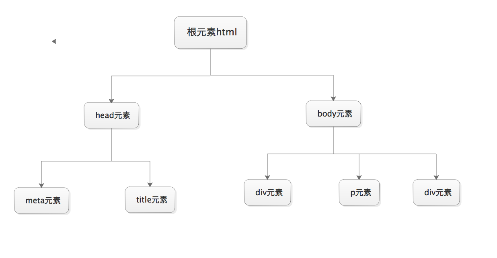

hyper text markup language 即超文本标记语言
超文本: 就是指页面内可以包含图片、链接，甚至音乐、程序等非文字元素。
标记语言: 标记（标签）构成的语言.
网页==HTML文档，由浏览器解析，用来展示的
静态网页：静态的资源，如xxx.html
动态网页：html代码是由某种开发语言根据用户请求动态生成的
html文档树形结构图：

由于历史的原因，各个浏览器在对页面的渲染上存在差异，甚至同一浏览器在不同版本中，对页面的渲染也不同。在
W3C标准出台以前，浏览器在对页面的渲染上没有统一规范，产生了差异(Quirks mode或者称为Compatibility
Mode)；由于W3C标准的推出，浏览器渲染页面有了统一的标准(CSScompat或称为Strict mode也有叫做Standars
mode)，这就是二者最简单的区别。
W3C标准推出以后，浏览器都开始采纳新标准，但存在一个问题就是如何保证旧的网页还能继续浏览，在标准出来以前，
很多页面都是根据旧的渲染方法编写的，如果用的标准来渲染，将导致页面显示异常。为保持浏览器渲染的兼容性，使以
前的页面能够正常浏览，浏览器都保留了旧的渲染方法（如：微软的IE）。这样浏览器渲染上就产生了Quircks mode
和Standars mode，两种渲染方法共存在一个浏览器上。
window.top.document.compatMode：
//BackCompat：怪异模式，浏览器使用自己的怪异模式解析渲染页面。
//CSS1Compat：标准模式，浏览器使用W3C的标准解析渲染页面。如果你的页面没有DOCTYPE的声明，那么compatMode默认就是BackCompat,这也就是恶魔的开始 -- 浏览器按照自己的方式解析渲染页面，那么，在不同的浏览器就会显示不同的样式。
如果你的页面添加了<!DOCTYPE html>那么，那么就等同于开启了标准模式，那么浏览器就得老老实实的按照W3C的标准解析渲染页面，这样一来，你的页面在所有的浏览器里显示的就都是一个样子了。
这就是<!DOCTYPE html>的作用。
<meta>
meta标签的组成：meta标签共有两个属性，它们分别是http-equiv属性和name 属性，不同的属性又有不同的参数值，这些不同的参数值就实现了不同的网页功能。
1: name属性主要用于描述网页，与之对应的属性值为content，content中的内容主要是便于搜索引擎机器人查找信息和分类信息用的。
<meta name="keywords" content="meta总结,html meta,meta属性,meta跳转"> <meta name="description" content="这是一个网站"/>
2: http-equiv顾名思义，相当于http的文件头作用，它可以向浏览器传回一些有用的信息，以帮助正确和精确地显示网页内容，content中的内容其实就是各个参数的变量值 。
<meta http-equiv="Refresh" content="2;URL=https://www.baidu.com"> //(注意后面的引号，分别在秒数的前面和网址的后面) <meta http-equiv="content-Type" charset=UTF8"> <meta http-equiv = "X-UA-Compatible" content = "IE=EmulateIE7" />
其他标签
<title>oldboy</title> <link rel="icon" href="http://www.jd.com/favicon.ico"> <link rel="stylesheet" href="css.css"> <script src="hello.js"></script>
块级标签和内联标签
<hn>: n的取值范围是1~6; 从大到小. 用来表示标题. <p>: 段落标签. 包裹的内容被换行.并且也上下内容之间有一行空白. <b> <strong>: 加粗标签. <strike>: 为文字加上一条中线. <em>: 文字变成斜体. <sup>和<sub>: 上角标 和 下角表. <br>:换行. <hr>:水平线 <div><span>
块级标签：<p><h1><table><ol><ul><form><div>
内联标签：<a><input><img><sub><sup><textarea><span>
block（块）元素的特点
inline元素的特点
特殊字符
< >；"；©®
图形标签<img>
src: 要显示图片的路径. alt: 图片没有加载成功时的提示. title: 鼠标悬浮时的提示信息. width: 图片的宽 height:图片的高 (宽高两个属性只用一个会自动等比缩放.) <img src="img/abc.jpg " alt="123" title="rua" width="300" height="300"/>
超链接标签<a>
href:要连接的资源路径 格式如下: href="http://www.baidu.com" target: _blank : 在新的窗口打开超链接. 框架名称: 在指定框架中打开连接内容. name: 定义一个页面的书签. 用于跳转 href : #id.（锚） <a href="http://www.xiaohuar.com/" target="_blank">
列表标签
<ul> <li>1</li> <li>2</li> <li>3</li> </ul> <ol> <li>1</li> <li>2</li> <li>3</li> </ol> <dl> <dt>第一章</dt> <dd>第一节</dd> <dd>第二节</dd> <dt>第二章</dt> <dd>第一节</dd> <dd>第二节</dd> </dl>
表格标签<table>
border: 表格边框.
cellpadding: 内边距
cellspacing: 外边距.
width: 像素 百分比.（最好通过css来设置长宽）
<tr>: table row
<th>: table head cell
<td>: table data cell
rowspan: 单元格竖跨多少行
colspan: 单元格横跨多少列（即合并单元格）
<th>: table header <tbody>(不常用): 为表格进行分区.
<table bgcolor="beige" border="1px" cellpadding="5px" cellspacing="1px"> <tr> <th rowspan="2">111</th> <th>222</th> <th>333</th> </tr> <tr> <td>222</td> <td>333</td> </tr> <tr> <td>111</td> <td colspan="2" align="center">222</td> </tr> </table>
表单标签<form>
<input> 标签的属性和对应值
type: text 文本输入框
password 密码输入框
radio 单选框
checkbox 多选框
submit 提交按钮
button 按钮(需要配合js使用.) button和submit的区别？
file 提交文件：form表单需要加上属性enctype="multipart/form-data"
name: 表单提交项的键.注意和id属性的区别：name属性是和服务器通信时使用的名称；而id属性是浏览器端使用的名称，该属性主要是为了方便客户端编程，而在css和javascript中使用的
value: 表单提交项的值.对于不同的输入类型，value 属性的用法也不同：
?12345type="button", "reset", "submit" - 定义按钮上的显示的文本 type="text", "password", "hidden" - 定义输入字段的初始值 type="checkbox", "radio", "image" - 定义与输入相关联的值
checked: radio 和 checkbox 默认被选中
readonly: 只读. text 和 password
disabled: 对所用input都好使.
<select> 下拉选标签属性
name:表单提交项的键.
size：选项个数
multiple：multiple
<option> 下拉选中的每一项 属性：
value:表单提交项的值. selected: selected下拉选默认被选中
<optgroup>为每一项加上分组
<textarea> 文本域
name: 表单提交项的键. cols: 文本域默认有多少列 rows: 文本域默认有多少行
<label>
<label for="www">姓名</label> <input id="www" type="text">
<fieldset>
<fieldset>
<legend>登录吧</legend>
<input type="text">
</fieldset>
<form action="192.168.50.85:8080"> <div>姓名<input type="text" name="user" /></div> <div>密码<input type="password" name="passwd" /></div> <div>性别 男<input type="radio" name="gender" value="man"/> 女<input type="radio" name="gender" value="woman"/></div> <div>爱好 电影<input type="checkbox" name="hobby" value="movie"/> 音乐<input type="checkbox" name="hobby" value="music"/></div> <div><input type="submit" value="提交"/></div> <div><input type="button" value="提交"/></div> <div>简介<textarea name="text" id="1" cols="30" rows="3">请输入简介</textarea></div> <div>省<select name="province" id="2" > <option value="henan">河南</option> <option value="hubei">湖北</option> <option value="hebei">河北</option> </select> </div> </form>